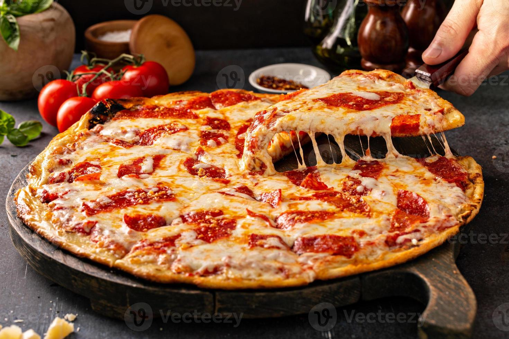

Pizza

Description
A freshly baked pizza has a golden crispy crust topped with rich tomato sauce
and melted mozzarella cheese.
Its warm aroma, savory toppings, and gooey cheese make
every bite delicious and satisfying.
Ingredients
- Pizza dough
- Tomato sauce
- Mozzarella cheese
- Pepperoni
- Mushrooms
- Bell peppers
- Onions
- Black olives
- Sausage
- Ham
Steps
- Prepare the pizza dough and let it rise if needed.
- Preheat the oven to a high temperature (220–250°C / 425–480°F).
- Roll or stretch the dough into your desired shape.
- Spread a thin layer of tomato sauce over the dough.
- Sprinkle mozzarella cheese evenly on top.
- Add your favorite toppings.
- Season with herbs such as oregano or basil.
- Bake for 10–15 minutes, or until the crust is golden and the cheese is bubbly.
- Remove from the oven and let it cool for a few minutes.
- Slice and serve while hot.
click here